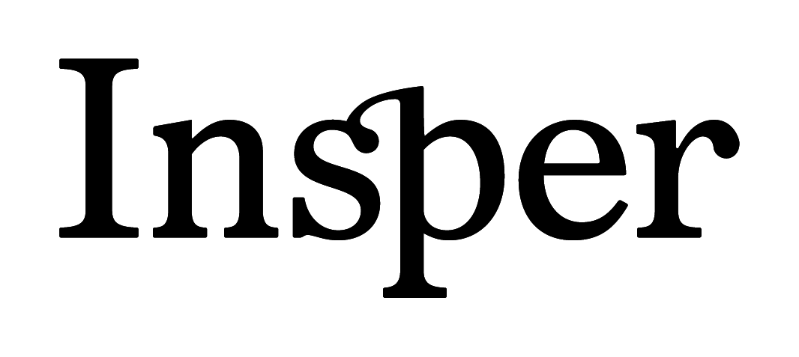

Aula 0 — Microeconomia I · MPE 2026/32
22 de abril de 2026
Aula 0 — Microeconomia I
Darcio Genicolo-Martins
Microeconomia I · MPE 2026/32 · Insper
22 de abril de 2026 · 19:30
Antes de entrar em preferências e utilidade: o contrato do curso. O que você recebe, o que você entrega, e como os dois lados vão saber que está funcionando.
Professor, monitor, matéria, espaço-tempo.
Darcio Genicolo-Martins
Como me procurar
Email: darciogm1@insper.edu.br
Regra de bolso: dúvida rápida de conteúdo vai para o canal da turma (monitoria/whatsapp da classe). Dúvida profunda, conflito de calendário, ou qualquer coisa pessoal — email direto.
Alberto Nishikawa
Nota
Presença em monitoria não é obrigatória, mas é onde o MPE aprende a fazer conta. Quem só assiste à aula e nunca vai na monitoria termina o curso entendendo, mas não dominando.
Ementa enxuta — 9 aulas + avaliação final:
| Bloco temático | Aulas |
|---|---|
| Teoria do consumidor (preferências → demanda) | 1–3 |
| Equilíbrio geral em trocas e produção | 4–5 |
| Arrow-Debreu (incerteza, ativos, mercados completos) | 6–7 |
| Falhas de mercado (externalidades, bens públicos) | 8 |
| Assimetria de informação (adversa, moral, sinalização, matching) | 9 |
O curso fecha Micro I para quem vai fazer Macro, Econometria ou Finanças no MPE. Piso é Nicholson & Snyder 12e. Teto é Jehle-Reny 3e. Gold standard estrutural é o ZaE.
| Componente | Frequência | Horário | Formato |
|---|---|---|---|
| Aulas (9 encontros) | Quartas, 22/04 – 17/06 | 19:30 – 22:30 (3h) | Presencial, Insper |
| Monitorias (5 encontros) | Sábados: 16/05, 23/05, 30/05, 13/06, 20/06 | ~2h | Virtual (link no portal) |
| Avaliação final | 24/06 (quarta) | 3h | Presencial, Insper |
Sala confirmada no Blackboard. Datas são fixas — conflitos pessoais para mim, por email.
70% prova final, 30% engajamento. Ninguém tira nota cheia sem entregar os dois lados.
Nota final = 0.70 × Prova Final + 0.30 × Engajamento
Sem piso individual nos componentes. Você pode compensar um item fraco com outros. Mas componentes muito baixos sinalizam algo que vou comentar individualmente antes da avaliação final.
| Componente | Peso dentro dos 30% | O que conta |
|---|---|---|
| Pré-aulas | 30% | Seções completadas + micro-checkpoints + quiz de revisão (10🟡) |
| Quizzes pós-aula | 30% | 10 questões cada (5🟡 + 5🔴), 1 por aula |
| Exercícios avaliativos | 30% | 5–8 exercícios 🟢/🟡/🔴 por aula, tudo dentro da plataforma, gabarito 5-passos após prazo |
| Reflexões qualitativas | 10% | Texto curto ao fim de cada pré-aula — alimenta o Bloco 0 da aula seguinte |
Tudo é rastreado e avaliado automaticamente pela plataforma. Nada por email, nada em papel. Correção e gabaritos saem com as respostas registradas.
Formato:
Cobertura:
Ponderação interna:
Aluno A: prova = 7,5 · engajamento = 8,0
Nota final = 0.70 × 7,5 + 0.30 × 8,0 = 7,65
Aluno B: prova = 9,0 · engajamento = 5,0
Nota final = 0.70 × 9,0 + 0.30 × 5,0 = 7,80
Dá para tirar nota boa com prova ok + engajamento forte, e vice-versa. O sistema é desenhado para não premiar só uma das pontas.
Cadência pensada para 4–6h/semana fora da aula.
Para cada aula X dada numa quarta-feira:
| Dia | O que acontece | Tempo-alvo |
|---|---|---|
| Qua 19:30 – 22:30 | Aula X em sala | 3 h |
| Qua após a aula | Abrem: quiz pós-X · exercícios avaliativos X · pré-aula da próx. semana | — |
| Qui / sex / sáb | Recomendado: fazer a pré-aula (leitura + micro-checkpoints + quiz revisão 10🟡 + reflexão) | 90–120 min |
| Dom / seg | Recomendado: fazer os exercícios avaliativos da aula X | 2–3 h |
| Terça | Recomendado: quiz pós-aula da aula X | 30 min |
| Qua 18:00 | Fecham: pré-aula · quiz pós-X · exercícios avaliativos X | — |
| Qua 19:30 | Aula X+1 começa | — |
Não é rígido — é um esqueleto. Se fizer tudo em bloco no sábado, tudo bem. O tracker olha se você entregou, não quando.
Regra única de fechamento: toda a entrega da semana fecha na quarta 18:00 — 1h30 antes da próxima aula. Três coisas travam ao mesmo tempo:
Depois desse corte: sem entrada, sem resubmissão. Gabaritos 5-passos saem logo em seguida.
Sem prazos móveis sem aviso. Quem precisar de extensão por motivo justo fala comigo por email antes do prazo, não depois.
Onde tudo acontece fora da sala de aula.
Cards das 9 aulas com 3 estados: cinza (não liberada) · vermelho “Nova” · verde “Concluída”.
Quando a aula está ativa, o card mostra 3 botões:
Nota
Senha inicial = parte do seu email antes do @. No primeiro login, a plataforma força troca de senha.
É rastreado:
Não é rastreado:
O objetivo é calibrar o ensino (onde a turma trava?) e justificar a nota de engajamento. Não é vigilância.
Bilateral. Cada lado assume a parte dele.
As 15 datas que importam.
| # | Data | Tema | N&S |
|---|---|---|---|
| 1 | 22/04 | Preferências, axiomas, utilidade | 3 |
| 2 | 29/04 | UMP, EMP, dualidade | 4 |
| 3 | 06/05 | Slutsky, elasticidades, demanda | 5–6 |
| 4 | 13/05 | Equilíbrio geral em trocas (Edgeworth) | 13 |
| 5 | 20/05 | Equilíbrio geral com produção | 13 |
| 6 | 27/05 | Arrow-Debreu I — incerteza | 7 |
| 7 | 03/06 | Arrow-Debreu II — ativos, mercados completos | 18 |
| 8 | 10/06 | Externalidades, bens públicos, Coase | 19 |
| 9 | 17/06 | Informação assimétrica — adversa, moral, sinalização | 18+ |
| Data | Formato | Foco |
|---|---|---|
| Sáb 16/05 | Monitoria 1 (Alberto) | Aulas 1–3: teoria do consumidor, Slutsky, exercícios |
| Sáb 23/05 | Monitoria 2 | Aula 4: equilíbrio geral em trocas |
| Sáb 30/05 | Monitoria 3 | Aula 5: EG com produção |
| Sáb 13/06 | Monitoria 4 | Aulas 6–7: Arrow-Debreu, incerteza, ativos |
| Sáb 20/06 | Monitoria 5 | Revisão geral + simulado da avaliação final |
| Qua 24/06 | Avaliação final | 3h, presencial, consulta A4 permitida |
Tudo isso já está no portal com o estado certo (bloqueado até a data de abertura). Quem quiser exportar pro Google Calendar, peça no canal da turma.
Três livros, um piso, um teto, um mapa.
Microeconomic Theory: Basic Principles and Extensions, 12ª ed.
Nota
Como usar:
Leia linearmente, parando em cada equação numerada. Reproduza no papel pelo menos as equações que a pré-aula destaca.
Volte ao capítulo depois da aula — pontos que pareciam enjoativos costumam ficar claros.
Advanced Microeconomic Theory, 3ª ed.
Pedagogicamente: leio N&S para formar o modelo mental, Jehle-Reny quando quero entender por que o modelo tem as propriedades que tem.
Microeconomia: do Zero ao Equilíbrio (e além)
darciogm.github.io/micro-book/ (público)MWG — Microeconomic Theory (Mas-Colell, Whinston, Green)
Um canal oficial. Use bem.
darciogm1@insper.edu.br
Quando usar:
Resposta em até 48h úteis. Se demorar mais, reenvie — pode ter caído em filtro.
O canal do WhatsApp/grupo da turma (combinado na primeira aula presencial) é para:
Não é para: reclamar de nota, pedir extensão, discutir privadamente. Essas vão para o email.
Começamos agora. Aula 1 já liberada.
darciogm.github.io/mpe-platform/ — trocar a senha no primeiro acesso.Se você terminou a pré-aula e ainda sobrou tempo: o quiz de revisão (10🟡) está lá para verificar que sedimentou. Fecha em quarta 18h.
Microeconomia I — MPE 2026/32
Aula 1 começa agora.

Microeconomia I · MPE 2026/32 · Aula 0 — Orientações